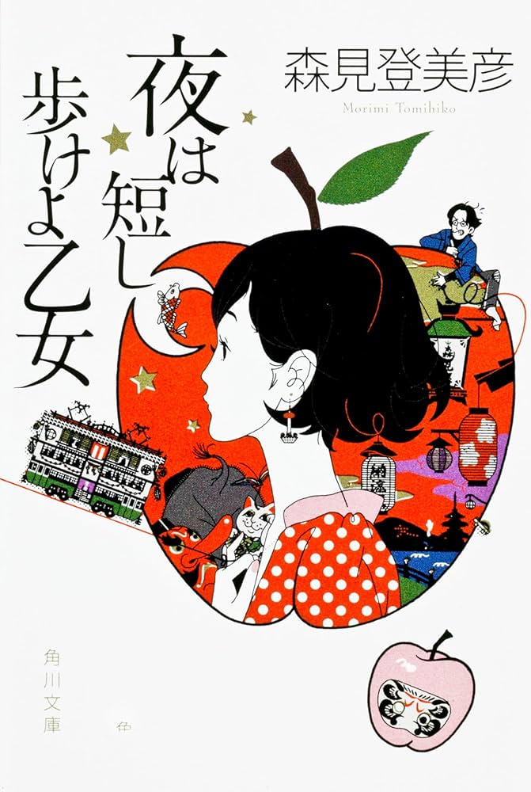
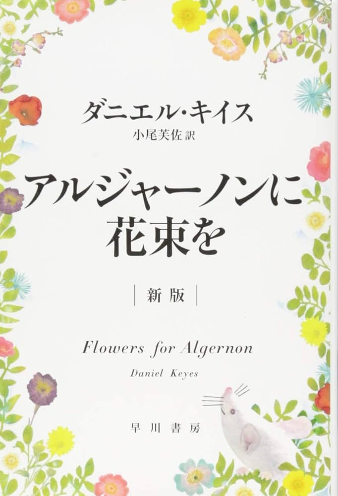
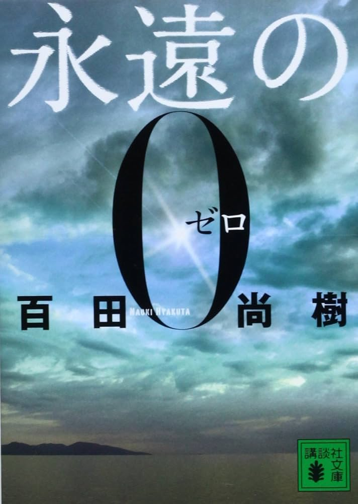

焼いた後のパンがサクサクで満足感があり、手軽に作れるので小腹が空いたときに最適！
ちなみに黄身は半熟、塩で食べるのが好きです。白身が少し焦げてカリカリになっているのも良い！
目玉焼きとご飯との相性が抜群で、そこに醤油がかかると最高の組み合わせに。そもそも醤油と白米だけでも美味しい,,,
黄身を食べる時に口の中が乾燥してモソモソしてしまうのが残念,,,
京都を舞台にした恋愛物語。鯉が空から降ってきたり、人が空を飛んだりと摩訶不思議な物語。作者の表現方法も独特で面白い作品でした。
知的障害者がとある手術で天才へと変貌することによる心の変化を描いた物語。人間の成長に反するように失うものもある。自分が他者とつながる上で大切なことを教えてくれる作品でした。
太平洋戦争で亡くなった祖父を知るためにその子供が祖父の戦友に話を聞いていく物語。話を聞くうちに祖父の人柄が分かり、同時に戦争の悲惨さもわかる作品でした。
やっぱり祭りと言ったら射的！屋台によって景品が違ったり、射的の銃が本格的なほど面白い。
これも夏祭りの王道！普通のお店で買うたこ焼きも美味しいけれど、屋台で買って食べるたこ焼きは倍美味しいです
カラフルなアイスの粒がとても冷たく、暑い夏の日にピッタリ！なかなか屋台を見ないのでレア度も高く、見つけるとテンション上がる,,,